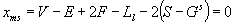

Definition from ISO/CD 10303-42:1992: A manifold solid B-rep is a
finite, arcwise connected volume bounded by one or more surfaces, each of which
is a connected, oriented, finite, closed 2-manifold. There is no restriction on
the genius of the volume, nor on the number of voids within the volume.
The Boundary Representation (B-rep) of a manifold solid utilizes a graph
of edges and vertices embedded in a connected, oriented, finite, closed two
manifold surface. The embedded graph divides the surface into arcwise connected
areas known as faces. The edges and vertices, therefore, form the boundaries of
the face and the domain of a face does not include its boundaries. The embedded
graph may be disconnected and may be a pseudo graph. The graph is labeled; that
is, each entity in the graph has a unique identity. The geometric surface
definition used to specify the geometry of a face shall be 2-manifold
embeddable in the plane within the domain of the face. In other words, it shall
be connected, oriented, finite, non-self-intersecting, and of surface genus 0.
Faces do not intersect except along their boundaries. Each edge along
the boundary of a face is shared by at most one other face in the assemblage.
The assemblage of edges in the B-rep do not intersect except at their
boundaries (i.e., vertices). The geometry curve definition used to specify the
geometry of an edge shall be arcwise connected and shall not self intersect or
overlap within the domain of the edge. The geometry of an edge shall be
consistent with the geometry of the faces of which it forms a partial bound.
The geometry used to define a vertex shall be consistent with the geometry of
the faces and edges of which it forms a partial bound.
A B-rep is represented by one or more closed shells which shall be
disjoint. One shell, the outer, shall completely enclose all the other shells
and no other shell may enclose a shell. The facility to define a B-rep with one
or more internal voids is provided by a subtype. The following version of the
Euler formula shall be satisfied, where V, E, F, Ll and S are the
numbers of unique vertices, edges, faces, loop uses and shells in the model and
Gs is the sum of the genus of the shells.
